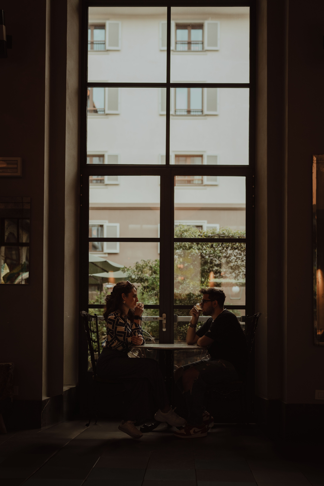
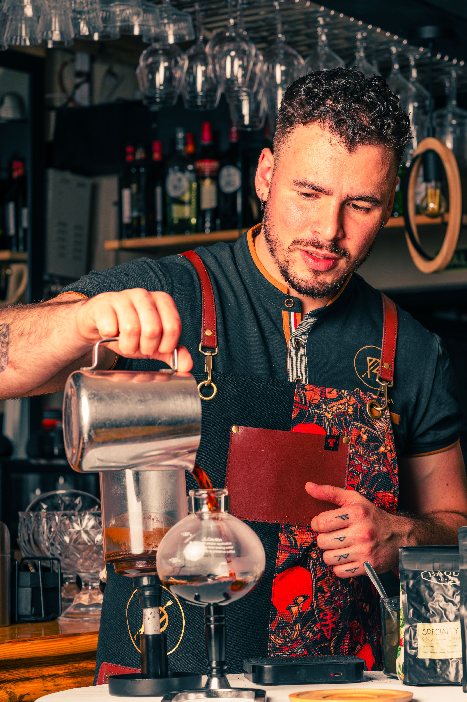

Quality Without Pretension
We care deeply about coffee, but we never want ordering a cup to feel complicated or intimidating.
Our Story • Our People • Our Coffee
Slow Brew started with a simple idea: coffee shops should feel like places to belong, not places to rush through.
How It Started
Slow Brew began as a small neighborhood café built around quiet mornings, comfortable spaces, and coffee made with care.
We wanted to create the kind of place where someone could stay for five minutes or five hours and feel equally welcome.
That philosophy still shapes everything we do today—from the coffee we source to the music we play and the way our cafés are designed.

What Matters
We care deeply about coffee, but we never want ordering a cup to feel complicated or intimidating.
Warm lighting, good seating, outlets, plants, music, and enough space to actually relax.
Great cafés are built by baristas, regulars, neighbors, and the conversations happening across the room.

The Coffee
We work with trusted roasting partners who source beans with flavor, consistency, and responsible growing practices in mind.
Our goal isn't to make coffee complicated. It's to make every cup taste consistently good.
Behind the Bar
Our baristas are the heart of Slow Brew. They're the people learning your order, recommending something new, and making the café feel familiar every time you walk in.
Come Say Hello →
We don't want you to feel like you have to leave the second your coffee is finished.
— The Slow Brew Philosophy
Come Experience It